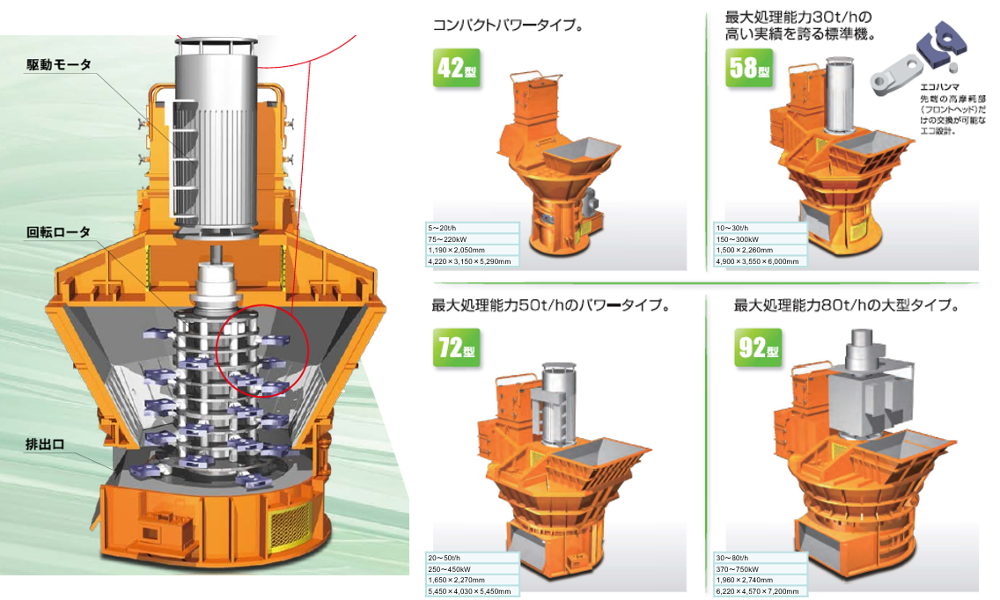
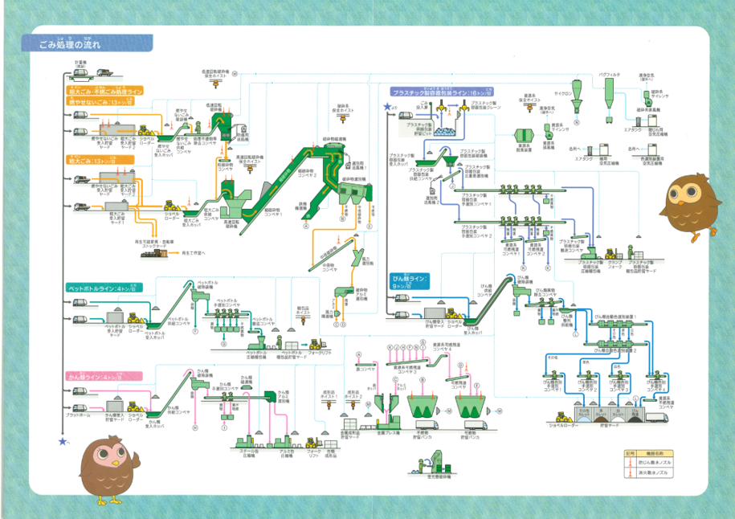
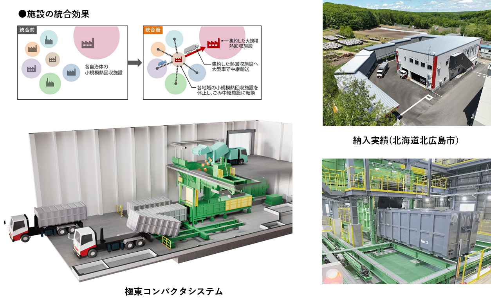
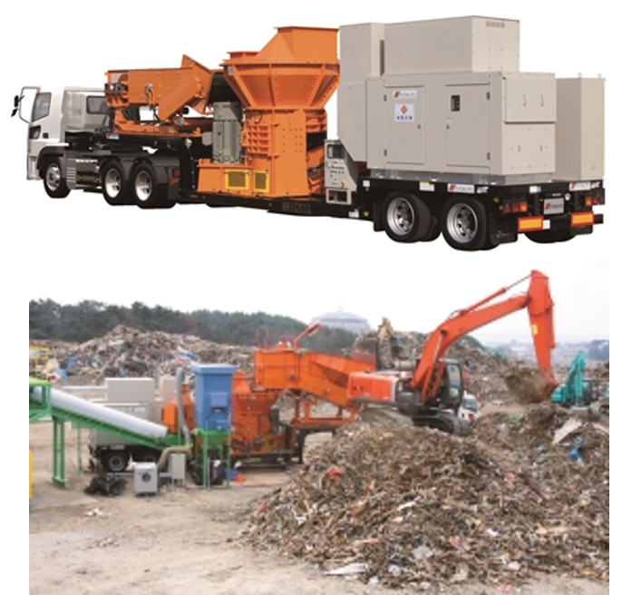
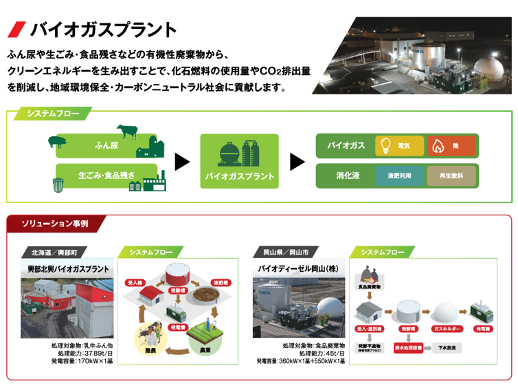
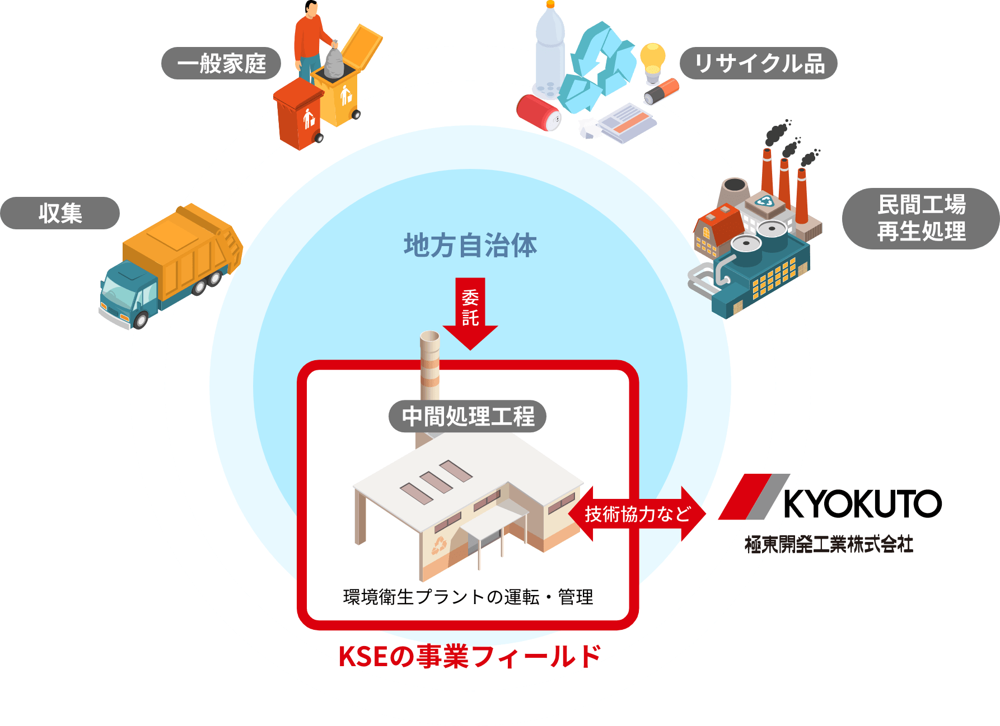
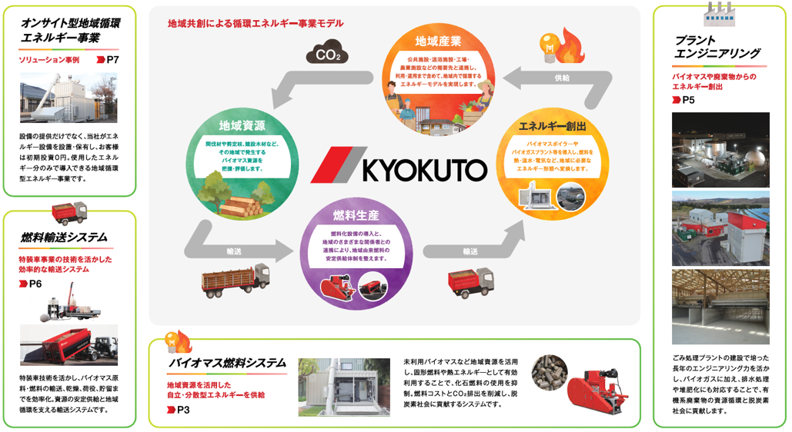
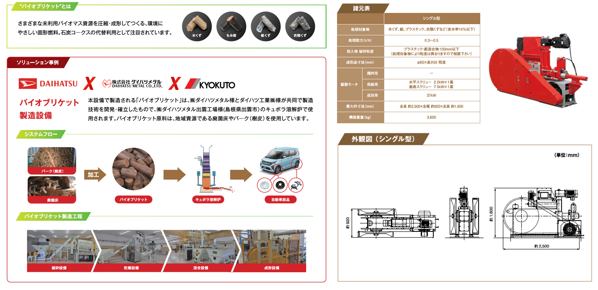

 破砕機当社オリジナル破砕機 「極東・トレマッシュ破砕機」 ●横型破砕機に必要な押込装置、排出フィーダが不要で経済的です ●破砕物は機械選別しやすい粒度特性をもち、高い選別精度を期待できます ●回転するハンマにより機内換気し、可燃ガスによる爆発リスクを低減します ●優れた耐久性をもち30年以上の稼働実績を誇ります ●ハンマ交換が容易で、ハンマは摩耗した部分のみの交換が可能で経済的です。
 マテリアルリサイクル推進施設マテリアルリサイクル推進施設は粗大ごみ、不燃ごみ、資源ごみから資源物を選別回収するための施設です。 50年以上のプラントエンジニアリング実績を生かし、自社製破砕機の『極東・トレマッシェ破砕機®』をはじめ、様々な選別設備を用いて効率的に資源物を選別回収します。
 ごみ中継施設ごみ処理の広域化処理の要求に伴い、複数の施設を統合・集約した大規模熱回収施設へのごみの輸送を効率よく行う方策として『ごみ中継施設』があります。 各地域より収集したごみを『ごみ中継施設』一か所に集め、コンパクタで圧縮したごみを大型コンテナに積替え輸送することで輸送車両の台数を最適化し高効率の輸送を実現することが可能です。
 災害廃棄物仮設処理施設災害発生直後の復旧支援には、迅速な災害廃棄物の処理が必須となります。本機は有事の際に被災地において機動的にオンサイト処理が行える、移動式破砕機です。発電機を搭載し、現場インフラ状況にかかわらず稼動することが可能です。 平成23年3月に発生した「東日本大震災」において、平成25年4月～9月中旬までの約5ヶ月間、現地での廃棄物処理が完了するまで順調に稼動を続け、地域の環境保全、復興事業に大きな貢献を果たしました。
 バイオガス施設ふん尿や生ごみ・食品残さなどの有機系廃棄物から、クリーンエネルギーを生み出すことで、化石燃料の使用量やCO2排出量を削減し、地球環境保全・カーボンニュートラル社会に貢献します
 長期包括運営委託事業極東サービスエンジニアリング（以下 KSE）は、環境保全設備のパイオニア・極東開発工業の実績・ノウハウを活かし、 地方自治体の委託を受け、ごみ処理施設やリサイクルセンターの運転・管理を行っています。KSEが担うのは、資源リサイクル工程の中で、収集されたごみを品種ごとに選別し、圧縮梱包、再生工場へ出荷するまでの、 いわゆる中間処理と呼ばれる部分です。現在では全国約30カ所の施設の運営・管理を受託しています。
 バイオマス関連地域循環エネルギーの創出 燃料づくりから設備導入まで、技術と実績で地域資源と自治体・地域産業をつなぎます。資源と需要を見える化し、最適な設備構成をトータルエンジニアリング。供給から利用・運用までつながる「地域に根付づく循環モデル」づくりを支えます。
 突き押し式成形機地域の未利用バイオマス原料を高密度に固形化したカーボンニュートラルな燃料です。 石炭コークス燃料を使用しているお客様に、このバイオブリケットを代替燃料としてご提案することで、燃料代の削減とCO2排出量の削減に貢献することができます。